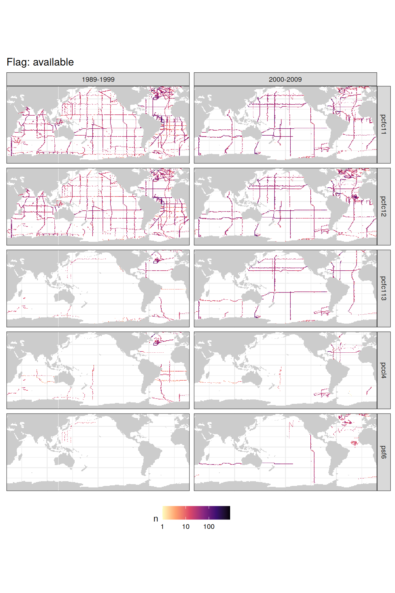
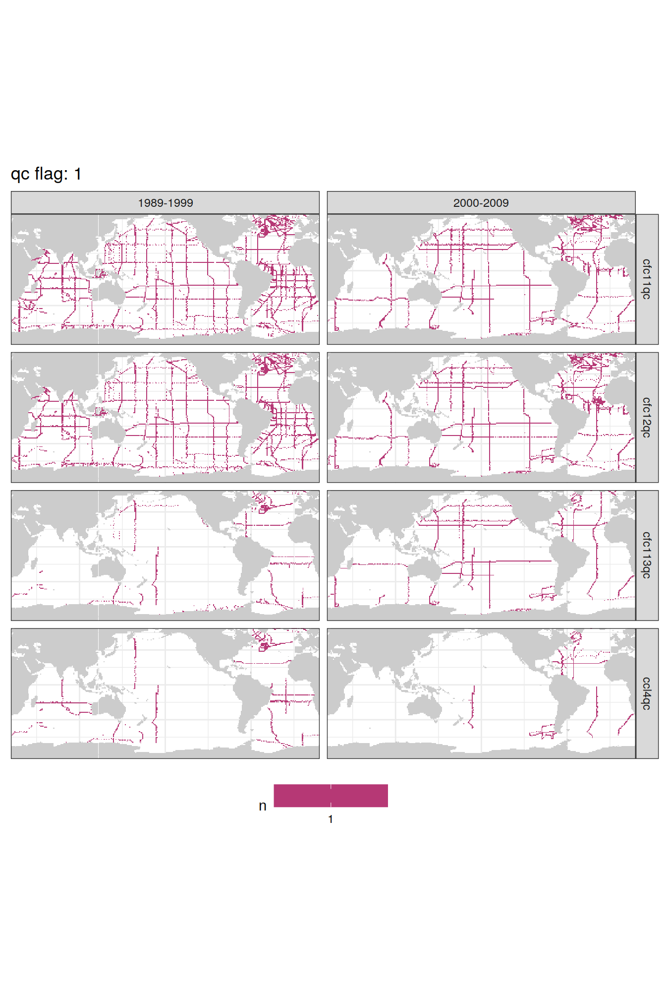
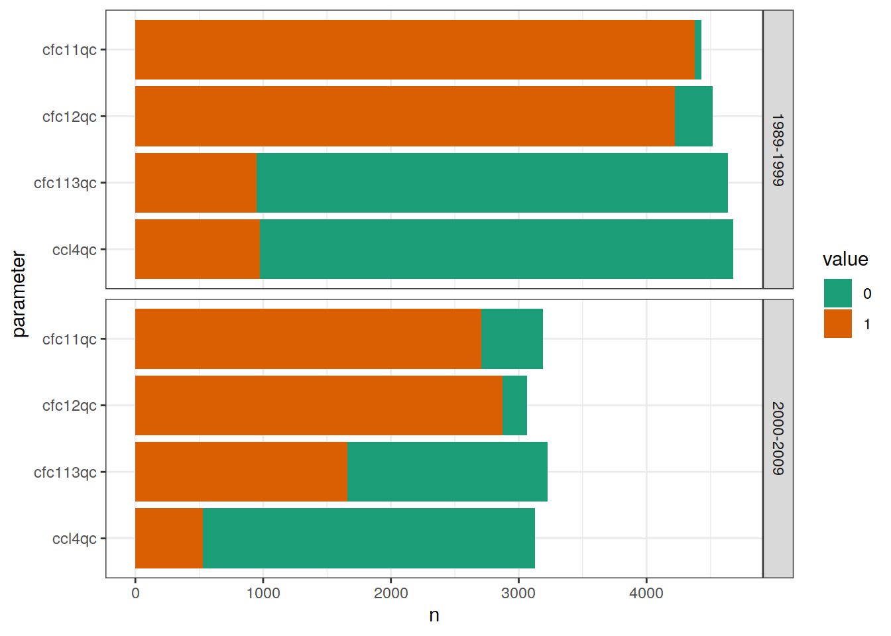
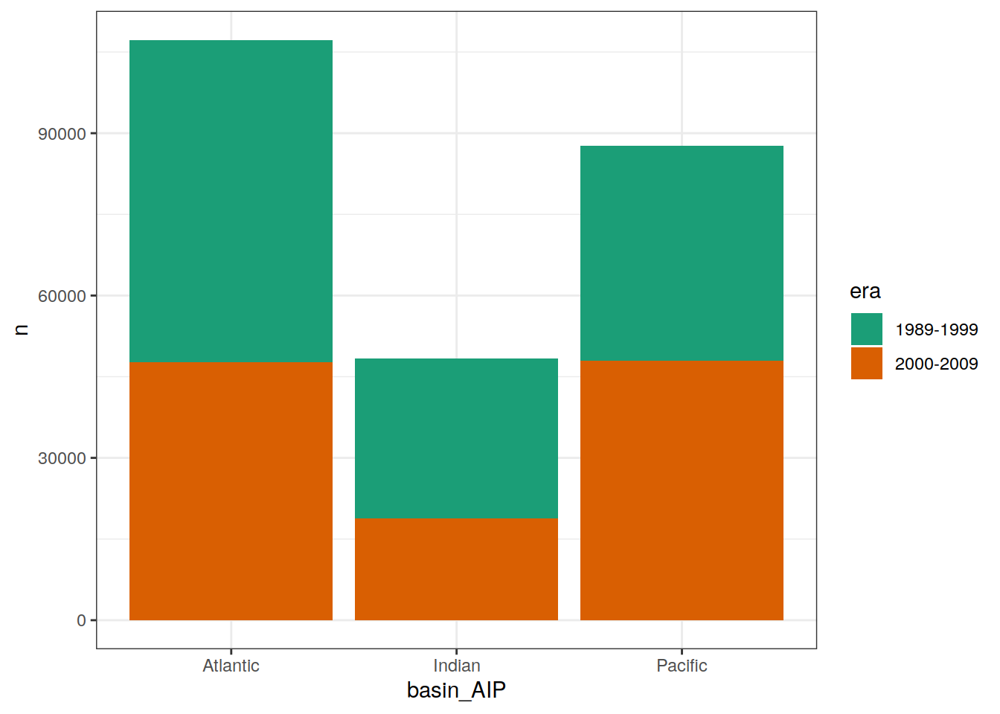

GLODAPv2_2021 halogenated tracers
Jens Daniel Müller
28 October, 2021
Last updated: 2021-10-28
Checks: 7 0
Knit directory: emlr_obs_v_XXX/
This reproducible R Markdown analysis was created with workflowr (version 1.6.2). The Checks tab describes the reproducibility checks that were applied when the results were created. The Past versions tab lists the development history.
Great! Since the R Markdown file has been committed to the Git repository, you know the exact version of the code that produced these results.
Great job! The global environment was empty. Objects defined in the global environment can affect the analysis in your R Markdown file in unknown ways. For reproduciblity it’s best to always run the code in an empty environment.
The command set.seed(20200707) was run prior to running the code in the R Markdown file. Setting a seed ensures that any results that rely on randomness, e.g. subsampling or permutations, are reproducible.
Great job! Recording the operating system, R version, and package versions is critical for reproducibility.
Nice! There were no cached chunks for this analysis, so you can be confident that you successfully produced the results during this run.
Great job! Using relative paths to the files within your workflowr project makes it easier to run your code on other machines.
Great! You are using Git for version control. Tracking code development and connecting the code version to the results is critical for reproducibility.
The results in this page were generated with repository version 0b14406. See the Past versions tab to see a history of the changes made to the R Markdown and HTML files.
Note that you need to be careful to ensure that all relevant files for the analysis have been committed to Git prior to generating the results (you can use wflow_publish or wflow_git_commit). workflowr only checks the R Markdown file, but you know if there are other scripts or data files that it depends on. Below is the status of the Git repository when the results were generated:
Ignored files:
Ignored: .Rhistory
Ignored: .Rproj.user/
Unstaged changes:
Modified: analysis/_site.yml
Modified: code/Workflowr_project_managment.R
Modified: data/auxillary/params_local.rds
Note that any generated files, e.g. HTML, png, CSS, etc., are not included in this status report because it is ok for generated content to have uncommitted changes.
These are the previous versions of the repository in which changes were made to the R Markdown (analysis/tracers_GLODAPv2_2021.Rmd) and HTML (docs/tracers_GLODAPv2_2021.html) files. If you’ve configured a remote Git repository (see ?wflow_git_remote), click on the hyperlinks in the table below to view the files as they were in that past version.
| File | Version | Author | Date | Message |
|---|---|---|---|---|
| Rmd | 0b14406 | jens-daniel-mueller | 2021-10-28 | added tracer plots and test without O2 data |
1 Version ID
The results displayed on this site correspond to the Version_ID:
params$Version_ID[1] "v_XXX"2 Read files
Main data source for this project is the preprocessed version of GLODAPv2:
params_local$GLODAPv2_version[1] "2021"GLODAP <-
read_csv(
paste0(
path_preprocessing,
"GLODAPv2.",
params_local$GLODAPv2_version,
"_preprocessed_tracer.csv"),
guess_max = 1e5
)3 Data preparation
3.1 Filter eras
# create labels for era
era_labels <- bind_cols(
start = params_local$era_start,
end = params_local$era_end)
era_labels <- era_labels %>%
mutate(start = if_else(start == -Inf, max(GLODAP$year), start),
end = if_else(end == Inf, max(GLODAP$year), end),
era = as.factor(paste(start, end, sep = "-")))
# filter GLODAP data within eras
GLODAP <- expand_grid(
GLODAP,
era_labels
)
# select data within each era
GLODAP <- GLODAP %>%
filter(year >= start & year <= end)
GLODAP <- GLODAP %>%
select(-c(start, end))3.2 Spatial boundaries
3.2.1 Basin mask
The basin mask from the World Ocean Atlas was used. For details consult the data base subsection for WOA18 data.
Please note that some GLODAP observations were made outside the WOA18 basin mask (i.e. in marginal seas) and will be removed for further analysis.
# use only data inside basinmask
GLODAP <- inner_join(GLODAP, basinmask)3.3 Flags and NA
Only rows (samples) for which all relevant parameters are available were selected, ie NA’s were removed.
According to Olsen et al (2020), flags within the merged master file identify:
f:
- 2: Acceptable
- 0: Interpolated (nutrients/oxygen) or calculated (CO[2] variables)
- 9: Data not used (so, only NA data should have this flag)
qc:
- 1: Adjusted or unadjusted data
- 0: Data appear of good quality but have not been subjected to full secondary QC
- data with poor or uncertain quality are excluded.
Following flagging criteria were taken into account:
- flag_f: 2, 9, 0
- flag_qc: 1, 0
The cleaning process was performed successively and the maps below represent the data coverage at various cleaning levels.
Summary statistics were calculated during cleaning process.
3.3.1 NA
GLODAP_NA <- GLODAP %>%
select(lon, lat, era, cfc11, cfc12, cfc113, ccl4, sf6) %>%
pivot_longer(cfc11:sf6,
names_to = "parameter",
values_to = "value") %>%
mutate(NA_flag = if_else(is.na(value), "NA", "available"),
parameter = fct_inorder(as.factor(parameter)))
GLODAP_NA_stats <- GLODAP_NA %>%
count(era, parameter, NA_flag)
GLODAP_NA <- GLODAP_NA %>%
count(lat, lon, era, parameter, NA_flag)3.3.1.1 Maps
GLODAP_NA %>%
group_split(NA_flag) %>%
# head(1) %>%
map(
~ map +
geom_raster(data = .x,
aes(lon, lat, fill = n)) +
scale_fill_viridis_c(
option = "magma",
direction = -1,
trans = "log10"
) +
theme(legend.position = "bottom",
axis.text = element_blank(),
axis.ticks = element_blank()) +
labs(title = paste("Flag:", unique(.x$NA_flag))) +
facet_grid(parameter ~ era)
)[[1]]
[[2]]rm(GLODAP_NA) 3.3.1.2 Stats
GLODAP_NA_stats %>%
ggplot(aes(parameter, n, fill = NA_flag)) +
coord_flip() +
scale_x_discrete(limits = rev) +
geom_col() +
facet_grid(era~.) +
scale_fill_brewer(palette = "Dark2")
rm(GLODAP_NA_stats)3.3.2 f flag
GLODAP_f_flags <- GLODAP %>%
select(lon, lat, era, ends_with("f")) %>%
pivot_longer(cfc11f:sf6f,
names_to = "parameter",
values_to = "value") %>%
mutate(parameter = fct_inorder(as.factor(parameter)))
GLODAP_f_flags_stats <- GLODAP_f_flags %>%
count(era, parameter, value)
GLODAP_f_flags <- GLODAP_f_flags %>%
count(lat, lon, era, parameter, value)3.3.2.1 Maps
GLODAP_f_flags %>%
group_split(value) %>%
# head(1) %>%
map(
~ map +
geom_raster(data = .x,
aes(lon, lat, fill = n)) +
scale_fill_viridis_c(
option = "magma",
direction = -1,
trans = "log10"
) +
theme(legend.position = "bottom",
axis.text = element_blank(),
axis.ticks = element_blank()) +
labs(title = paste("f flag:", unique(.x$value))) +
facet_grid(parameter ~ era)
)[[1]]
[[2]]
rm(GLODAP_f_flags)3.3.2.2 Stats
GLODAP_f_flags_stats %>%
mutate(value = as.factor(value)) %>%
ggplot(aes(parameter, n, fill = value)) +
coord_flip() +
scale_x_discrete(limits = rev) +
geom_col() +
facet_grid(era~.) +
scale_fill_brewer(palette = "Dark2")
rm(GLODAP_f_flags_stats)3.3.3 qc flag
GLODAP_qc_flags <- GLODAP %>%
select(lon, lat, era, ends_with("qc")) %>%
pivot_longer(cfc11qc:ccl4qc,
names_to = "parameter",
values_to = "value") %>%
mutate(parameter = fct_inorder(as.factor(parameter))) %>%
count(lat, lon, era, parameter, value)
GLODAP_qc_flags_stats <- GLODAP_qc_flags %>%
count(era, parameter, value)
GLODAP_qc_flags <- GLODAP_qc_flags %>%
count(lat, lon, era, parameter, value)3.3.3.1 Maps
GLODAP_qc_flags %>%
group_split(value) %>%
# head(1) %>%
map(
~ map +
geom_raster(data = .x,
aes(lon, lat, fill = n)) +
scale_fill_viridis_c(
option = "magma",
direction = -1,
trans = "log10"
) +
theme(legend.position = "bottom",
axis.text = element_blank(),
axis.ticks = element_blank()) +
labs(title = paste("qc flag:", unique(.x$value))) +
facet_grid(parameter ~ era)
)[[1]]
[[2]]
rm(GLODAP_qc_flags)3.3.3.2 Stats
GLODAP_qc_flags_stats %>%
mutate(value = as.factor(value)) %>%
ggplot(aes(parameter, n, fill = value)) +
coord_flip() +
scale_x_discrete(limits = rev) +
geom_col() +
facet_grid(era~.) +
scale_fill_brewer(palette = "Dark2")
rm(GLODAP_qc_flags_stats)3.3.4 Apply filter
GLODAP <- GLODAP %>%
filter(
if_all(
c(tco2, talk, params_local$MLR_predictors, depth, gamma),
~ !is.na(.)
),
if_all(ends_with("f"), ~ . %in% params_local$flag_f),
if_all(ends_with("qc"), ~ . %in% params_local$flag_qc)
)4 Indian Ocean
4.1 NS section
GLODAP_grid_Indian <- GLODAP %>%
filter(basin_AIP == "Indian",
lon > 70,
lon < 100,
cruise %in% c(249, 250, 352, 353)) %>%
mutate(cruise = as.factor(cruise)) %>%
distinct(era, lon, lat, cruise, year = as.factor(year(date)))
map +
geom_tile(data = GLODAP_grid_Indian,
aes(lon, lat, fill = year)) +
facet_grid(era ~ .)
IO_NS <- GLODAP %>%
filter(cruise %in% c(249, 250, 352, 353),
!is.na(cfc12))
IO_NS %>%
ggplot(aes(cfc12)) +
geom_histogram() +
facet_grid(era ~ .)
IO_NS %>%
ggplot(aes(lat , depth, col = cfc12)) +
geom_point() +
scale_color_viridis_c(trans = "log10") +
scale_y_reverse() +
facet_grid(era ~ .)
IO_NS_grid <- IO_NS %>%
mutate(depth_grid = cut(depth,
seq(0,1e4,200),
seq(100,1e4,200)),
depth_grid = as.numeric(as.character(depth_grid)),
lat_grid = cut(lat,
seq(-100,100,2),
seq(-99,100,2)),
lat_grid = as.numeric(as.character(lat_grid))) %>%
group_by(lat_grid, depth_grid, era) %>%
summarise(cfc12 = mean(cfc12, na.rm = TRUE)) %>%
ungroup()
IO_NS_grid %>%
ggplot(aes(lat_grid , depth_grid, fill = cfc12)) +
geom_raster() +
scale_fill_viridis_c(trans = "log10") +
scale_y_reverse() +
coord_cartesian(expand = 0) +
facet_grid(era ~ .)
IO_NS_grid_offset <- IO_NS_grid %>%
pivot_wider(names_from = era,
values_from = cfc12) %>%
mutate(delta_cfc12 = `2000-2009` - `1989-1999`)
IO_NS_grid_offset %>%
# drop_na() %>%
ggplot(aes(lat_grid , depth_grid, fill = delta_cfc12)) +
geom_raster() +
scale_fill_divergent(mid = "grey80",
na.value = "black") +
scale_y_reverse() +
coord_cartesian(expand = 0)
IO_NS_grid_offset %>%
mutate(delta_cfc12 = cut(delta_cfc12, c(-Inf, 0.02, 0.05, 0.2, Inf))) %>%
ggplot(aes(lat_grid , depth_grid, fill = delta_cfc12)) +
geom_raster() +
scale_fill_viridis_d(na.value = "grey") +
scale_y_reverse() +
coord_cartesian(expand = 0)
4.2 EW section
GLODAP_grid_Indian <- GLODAP %>%
filter(basin_AIP == "Indian",
lat > -25,
lat < -15,
cruise %in% c(252, 488)
) %>%
mutate(cruise = as.factor(cruise)) %>%
distinct(era, lon, lat, cruise, year = as.factor(year(date)))
map +
geom_tile(data = GLODAP_grid_Indian,
aes(lon, lat, fill = year)) +
facet_wrap(~ era)IO_EW <- GLODAP %>%
filter(cruise %in% c(252, 488),
!is.na(cfc12))
IO_EW %>%
ggplot(aes(cfc12)) +
geom_histogram() +
facet_grid(era ~ .)
IO_EW %>%
ggplot(aes(lon , depth, col = cfc12)) +
geom_point() +
scale_color_viridis_c(trans = "log10") +
scale_y_reverse() +
facet_grid(era ~ .)
IO_EW_grid <- IO_EW %>%
mutate(depth_grid = cut(depth,
seq(0,1e4,200),
seq(100,1e4,200)),
depth_grid = as.numeric(as.character(depth_grid)),
lon_grid = cut(lon,
seq(-100,200,2),
seq(-99,200,2)),
lon_grid = as.numeric(as.character(lon_grid))) %>%
group_by(lon_grid, depth_grid, era) %>%
summarise(cfc12 = mean(cfc12, na.rm = TRUE)) %>%
ungroup()
IO_EW_grid %>%
ggplot(aes(lon_grid , depth_grid, fill = cfc12)) +
geom_tile() +
scale_fill_viridis_c(trans = "log10") +
scale_y_reverse() +
coord_cartesian(expand = 0) +
facet_grid(era ~ .)
IO_EW_grid_offset <- IO_EW_grid %>%
pivot_wider(names_from = era,
values_from = cfc12) %>%
mutate(delta_cfc12 = `2000-2009` - `1989-1999`)
IO_EW_grid_offset %>%
# drop_na() %>%
ggplot(aes(lon_grid , depth_grid, fill = delta_cfc12)) +
geom_raster() +
scale_fill_divergent(mid = "grey80",
na.value = "black") +
scale_y_reverse() +
coord_cartesian(expand = 0)
IO_EW_grid_offset %>%
mutate(delta_cfc12 = cut(delta_cfc12, c(-Inf, 0.02, 0.05, 0.2, Inf))) %>%
ggplot(aes(lon_grid , depth_grid, fill = delta_cfc12)) +
geom_raster() +
scale_fill_viridis_d(na.value = "grey") +
scale_y_reverse() +
coord_cartesian(expand = 0)
5 Overview plots
5.1 Number of overservations
GLODAP %>%
group_by(era, basin_AIP) %>%
count() %>%
ggplot(aes(basin_AIP, n, fill = era)) +
geom_col() +
scale_fill_brewer(palette = "Dark2")
5.2 Assign coarse spatial grid
For the following plots, the cleaned data set was re-opened and observations were gridded spatially to intervals of:
- 5° x 5°
GLODAP <- m_grid_horizontal_coarse(GLODAP)5.3 Histogram Zonal coverage
GLODAP_histogram_lat <- GLODAP %>%
group_by(era, lat_grid, basin_AIP) %>%
tally() %>%
ungroup()
GLODAP_histogram_lat %>%
ggplot(aes(lat_grid, n, fill = era)) +
geom_col() +
scale_fill_brewer(palette = "Dark2") +
facet_wrap( ~ basin_AIP) +
coord_flip(expand = 0) +
theme(legend.position = "top",
legend.title = element_blank())
rm(GLODAP_histogram_lat)5.4 Histogram temporal coverage
GLODAP_histogram_year <- GLODAP %>%
group_by(year, basin_AIP) %>%
tally() %>%
ungroup()
GLODAP_histogram_year %>%
ggplot() +
geom_vline(xintercept = sort(params_local$era_end)[1] + 0.5) +
geom_col(aes(year, n,
fill = basin_AIP)) +
scale_fill_brewer(palette = "Dark2") +
scale_shape_manual(values = 24, name = "") +
scale_y_continuous() +
coord_cartesian(expand = 0) +
theme(
legend.position = "top",
legend.direction = "vertical",
legend.title = element_blank(),
axis.title.x = element_blank()
)
rm(GLODAP_histogram_year,
era_median_year)5.5 Zonal temporal coverage (Hovmoeller)
GLODAP_hovmoeller_year <- GLODAP %>%
group_by(year, lat_grid, basin_AIP) %>%
tally() %>%
ungroup()
GLODAP_hovmoeller_year %>%
ggplot(aes(year, lat_grid, fill = n)) +
geom_tile() +
geom_vline(xintercept = sort(params_local$era_end)[1] + 0.5) +
scale_fill_viridis_c(option = "magma",
direction = -1,
trans = "log10") +
coord_cartesian(expand = 0) +
facet_wrap( ~ basin_AIP, ncol = 1) +
theme(legend.position = "top",
axis.title.x = element_blank())
rm(GLODAP_hovmoeller_year)5.6 Coverage maps by era
5.6.1 Final input data
The following plots show the remaining data density in each grid cell after all cleaning steps, separately for each era.
GLODAP_tco2_grid <- GLODAP %>%
count(lat, lon)
map +
geom_bin2d(data = GLODAP,
aes(lon, lat),
binwidth = c(1,1)) +
scale_fill_viridis_c(option = "magma", direction = -1, trans = "log10") +
facet_wrap(~era, ncol = 1) +
labs(title = "Cleaned GLODAP observations",
subtitle = paste("Version:", params_local$Version_ID)) +
theme(axis.title = element_blank())
sessionInfo()R version 4.0.3 (2020-10-10)
Platform: x86_64-pc-linux-gnu (64-bit)
Running under: openSUSE Leap 15.2
Matrix products: default
BLAS: /usr/local/R-4.0.3/lib64/R/lib/libRblas.so
LAPACK: /usr/local/R-4.0.3/lib64/R/lib/libRlapack.so
locale:
[1] LC_CTYPE=en_US.UTF-8 LC_NUMERIC=C
[3] LC_TIME=en_US.UTF-8 LC_COLLATE=en_US.UTF-8
[5] LC_MONETARY=en_US.UTF-8 LC_MESSAGES=en_US.UTF-8
[7] LC_PAPER=en_US.UTF-8 LC_NAME=C
[9] LC_ADDRESS=C LC_TELEPHONE=C
[11] LC_MEASUREMENT=en_US.UTF-8 LC_IDENTIFICATION=C
attached base packages:
[1] stats graphics grDevices utils datasets methods base
other attached packages:
[1] lubridate_1.7.9 ggforce_0.3.3 metR_0.9.0 scico_1.2.0
[5] patchwork_1.1.1 collapse_1.5.0 forcats_0.5.0 stringr_1.4.0
[9] dplyr_1.0.5 purrr_0.3.4 readr_1.4.0 tidyr_1.1.3
[13] tibble_3.1.3 ggplot2_3.3.5 tidyverse_1.3.0 workflowr_1.6.2
loaded via a namespace (and not attached):
[1] fs_1.5.0 RColorBrewer_1.1-2 httr_1.4.2
[4] rprojroot_2.0.2 tools_4.0.3 backports_1.1.10
[7] bslib_0.2.5.1 utf8_1.1.4 R6_2.5.0
[10] DBI_1.1.0 colorspace_2.0-2 withr_2.3.0
[13] tidyselect_1.1.0 compiler_4.0.3 git2r_0.27.1
[16] cli_3.0.1 rvest_0.3.6 xml2_1.3.2
[19] labeling_0.4.2 sass_0.4.0 scales_1.1.1
[22] checkmate_2.0.0 digest_0.6.27 rmarkdown_2.10
[25] pkgconfig_2.0.3 htmltools_0.5.1.1 dbplyr_1.4.4
[28] highr_0.8 rlang_0.4.11 readxl_1.3.1
[31] rstudioapi_0.13 jquerylib_0.1.4 generics_0.1.0
[34] farver_2.0.3 jsonlite_1.7.1 magrittr_1.5
[37] Matrix_1.2-18 Rcpp_1.0.5 munsell_0.5.0
[40] fansi_0.4.1 lifecycle_1.0.0 stringi_1.5.3
[43] whisker_0.4 yaml_2.2.1 MASS_7.3-53
[46] grid_4.0.3 blob_1.2.1 parallel_4.0.3
[49] promises_1.1.1 crayon_1.3.4 lattice_0.20-41
[52] haven_2.3.1 hms_0.5.3 knitr_1.33
[55] pillar_1.6.2 reprex_0.3.0 glue_1.4.2
[58] evaluate_0.14 RcppArmadillo_0.10.1.2.0 data.table_1.14.0
[61] modelr_0.1.8 vctrs_0.3.8 tweenr_1.0.2
[64] httpuv_1.5.4 cellranger_1.1.0 gtable_0.3.0
[67] polyclip_1.10-0 assertthat_0.2.1 xfun_0.25
[70] broom_0.7.9 RcppEigen_0.3.3.7.0 later_1.2.0
[73] viridisLite_0.3.0 ellipsis_0.3.2 here_0.1